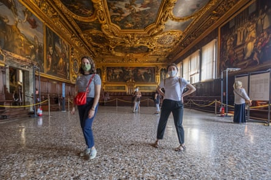

T his week’s masterclass in the renewal of the entente cordiale was based on a genuine desire by two countries to reconnect. But in addition it served as a reminder that diplomacy is not only an art, but art itself has always been an essential tool of diplomacy. So the extended loan of the Bayeux tapestry , exchanged with treasures from Sutton Hoo, is not just a gesture of trust but marks a return to the roots of diplomacy, and its cultural lure.
Doubtless security experts will remember the summit’s declarations of new nuclear co-operation while pollsters will eye “the one in, one out” migrant deal to see if it actually turns the political tide in the Channel. But the popular legacy will be the queues forming at the British Museum from September 2026 when the tapestry goes on display, and in Rouen and Caen when the treasures from Sutton Hoo are viewed by the French in what is already being billed as the “Year of the Normans”. True, some Telegraph readers are already spluttering about the French sending a reminder of their conquest of the Anglo-Saxons, or that Britain is just a convenient place to dump the cloth during the two-year closure of the Bayeux Museum, but the British Museum has the prospect of huge crowds to enjoy.
Art and antiques, alongside silk fabrics, animals and inventions, have always been the mainstay of the diplomatic gift, the entry point and sometimes the centre point for any communication. Indeed in academic literature, art has been described as the mute diplomat. The historian of early modern diplomacy Anthony Colantuono argues that artworks, both as gifts and on display, are not peripheral accessories to political action but are in themselves instruments of diplomatic persuasion or seduction. They function as rhetorical devices, which have the potential to “say that which the [diplomat] is not permitted to say, without uttering a single word”.
So established had the diplomatic gift become that by 1071 – a little after William I sent his small boats across the Channel – “the Book of Gifts and Rarities” was compiled by an official in the Fatimid caliphate detailing five centuries of lavish presents at Islamic diplomatic meetings, weddings and a circumcision feast. It is a catalogue of artistry capable of filling any national museum. The Doge’s Palace in Venice is in part a monument to the trade in often spiritual gifts designed to bridge cultures between Safavid Persia and Venetian diplomats.
A monument to diplomatic trade? The interior of the Doge’s Palace in Venice.Photograph: Stefano Mazzola/Awakening/Getty Images
Gifts are not just tokens of esteem, but can have more cynical motives such as acting as permits for slavers and missionaries. The first known mechanical clock to reach Japan was presented by the Jesuit Francis Xavier in the 1550s to Ōuchi Yoshitaka, the daimyō of Yamaguchi in western Japan. In return for being able to practise religion, the Jesuits offered “a mirror that could make old eyes see afresh” [ie spectacles], an instrument that “could play all the sounds of the thirteen-stringed koto without plucking any strings” (a harpsichord), “two mirrors that made one see far-away things very clearly” (possibly a telescope) and “a sounding bell that did not distinguish between the length of night and day in regulating the hours” (a mechanical clock).
Ekaterina Heath, a historian of 19th-century Russia, also points to gifts sometimes not merely being acts of goodwill, but rather a form of “symbolic violence” intended to influence decision-making. The British envoys, she argues, used these gifts to gain leverage and ensure favourable negotiations on issues such as trade and military alliances. The timing of the gifts coincided with efforts to pressure Russia in matters of trade and war, highlighting the strategic nature of these diplomatic gestures. Consequently, during the period 1795–97, the British government sent a range of gifts to Russia: a Herschel telescope for Empress Catherine II, hundreds of exotic plants from the Royal Botanic Gardens at Kew for Grand Duchess Maria Feodorovna, and six horses for Emperor Paul I.
The most generous ruler would not just send a work of art, but a celebrated artist, as did Philip IV of Spain when he sent Peter Paul Rubens on a diplomatic mission in 1629 to the court of Charles I of England. Rubens completed the preliminary negotiations for a treaty of peace and friendship between the two countries, and painted three works for the king.
Treasures from the Sutton Hoo burial site will be loaned to France to be exhibited in Normandy.Photograph: Ludovic Marin/AFP/Getty Images
But it is the French rather than the Spanish who became the masters of the diplomatic gift when French citizens in 1885 sent the Statue of Liberty, a commemoration of America’s independence from England and the abolition of slavery, to New York. It arrived reduced to 350 individual pieces and packed in 214 crates, and became a symbol of safe harbour for millions of migrants. Nearly a century later in 1963, the French pulled off a coup after a long debate about loaning national treasures abroad and sent the Mona Lisa overseas for the first time. Her smile, unflustered by the crowds, came to be seen by 1 million Americans at the Metropolitan Museum of Art.
But France has also been the victim of the most infamous disaster in diplomatic gifting of modern times.
In 2013, a grateful Malian government gave a baby camel to the then French president, François Hollande, during a triumphant visit to Timbuktu after French troops had intervened to weaken Islamist rebels who had seized the north of the country. Hollande left the camel with a local family prior to arranging its transport to Paris, but owing to a miscommunication the family slaughtered the animal and gobbled it up it in a tagine sauce.